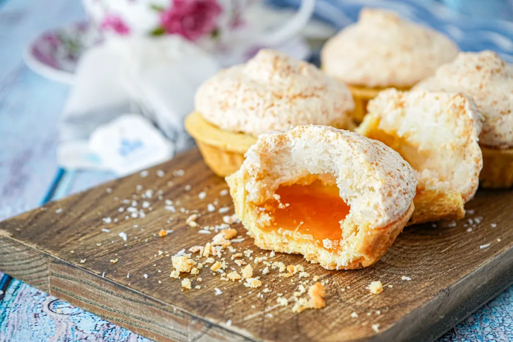

Hertzoggies

Prep Time: 25 mins
Yield: 12 servings
Ingredients:
- 1 cup flour
- 1/2 teaspoon baking powder
- Pinch of salt
- 1/4 cup butter
- 1/4 cup sugar
- 1 egg yolk
- 2 tablespoons cold water
- Apricot jam for filling
- 1 egg white
- 1/4 cup coconut
Steps:
- Mix flour, baking powder, salt, and butter to form crumbs.
- Add sugar, egg yolk, and cold water to form dough.
- Roll and cut into tartlet shapes.
- Fill each with apricot jam.
- Whip egg white with coconut and spoon on top.
- Bake at 180°C (350°F) for 20 minutes.
- Cool and enjoy!